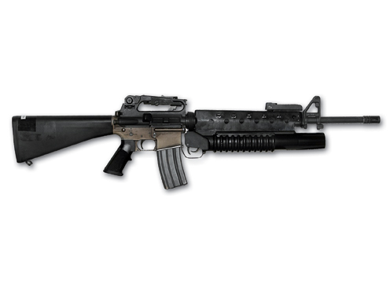

M 16
The M16 rifle, officially designated Rifle, Caliber 5.56 mm, M16, is the United States military version of the AR-15 rifle. The rifle was adapted for semi-automatic, three-round burst, and full-automatic fire.[6] Colt purchased the rights to the AR-15 from ArmaLite, and currently uses that designation only for semi-automatic versions of the rifle. The M16 fires the 5.56×45mm NATO cartridge. The rifle entered United States Army service and was deployed for jungle warfare operations in South Vietnam in 1963,[7] becoming the U.S. military's standard service rifle of the Vietnam War by 1969,[8] replacing the M14 rifle in that role. The U.S. Army retained the M14 in CONUS, Europe, and South Korea until 1970. Since the Vietnam War, the M16 rifle family has been the primary service rifle of the U.S. armed forces.
- Range: 550 metres
- 20" barrell
- Capacity: 30 rounds